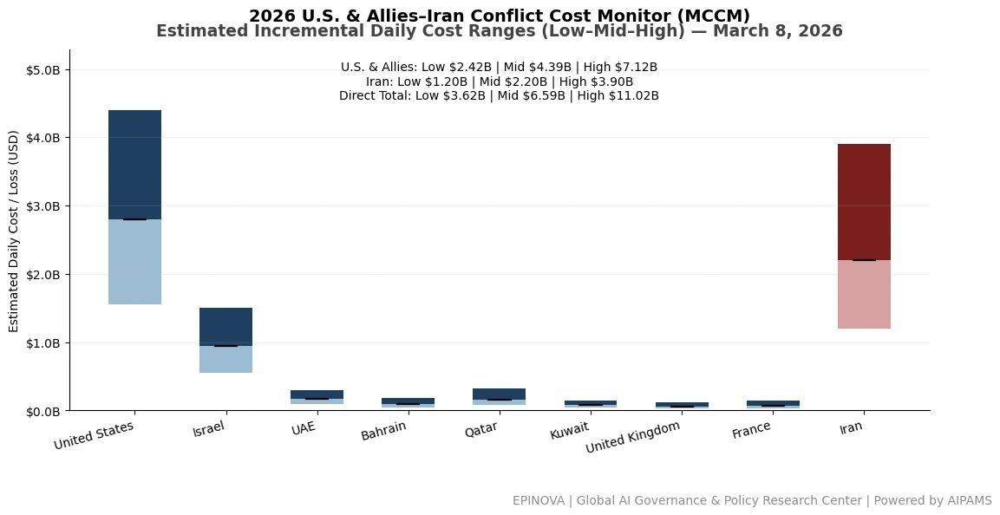
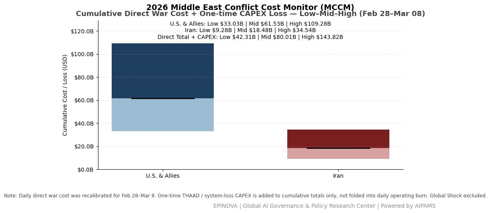
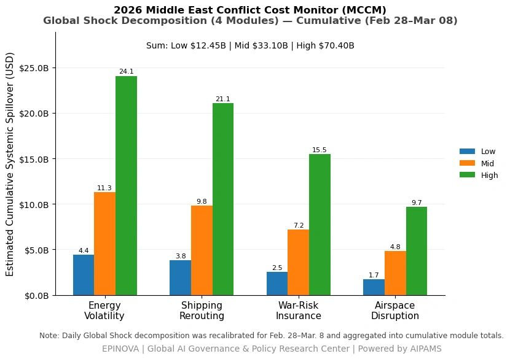

2026 U.S. & Allies–Iran Conflict Cost Monitor (MCCM): March 8
Powered by AIPAMS
Introduction
The 2026 Middle East Conflict Cost Monitor (MCCM) provides an event-driven, scenario-based assessment of daily conflict-related expenditures and losses across major state actors involved in the crisis. Using a structured low–mid–high estimation framework, the series aggregates publicly available operational indicators, force posture changes, strike intensity proxies, reported material damage, and infrastructure disruptions to produce comparable daily cost ranges.
The framework distinguishes between (1) direct military expenditures and asset losses, (2) infrastructure and energy-sector disruption costs, and (3) systemic market spillovers (“Global Shock”), which are reported separately from war-specific accounts.
MCCM is designed as a rolling monitoring instrument rather than a definitive accounting ledger. All estimates are expressed in current U.S. dollars (USD) and reflect bounded scenario approximations intended for comparative analysis and policy discussion. High-range estimates may incorporate upper-bound scenario adjustments where reported high-value asset losses remain under verification. Estimates are updated as verification improves and may be revised retroactively.

Note:
Ranges reflect scenario-bounded estimates. Low = minimum confirmed observable losses. Mid = most probable range based on publicly available reporting and operational cost parameters. High = upper-bound scenario including reported but not independently verified high-value asset losses. Figures exclude Global Shock (systemic market spillovers). All values are incremental (24-hour estimate).

Note:
Cumulative totals represent aggregated daily scenario ranges. High range includes scenario-based upper-bound adjustments (e.g., reported strategic asset losses). Figures exclude Global Shock. Values rounded; subject to revision as verification improves.

Note:
Global Shock represents cumulative systemic spillovers during the reporting period and is decomposed into four modules: Energy Volatility, Shipping Rerouting, War-Risk Insurance Premiums, and Airspace Disruption. These modules capture major economic and logistical externalities associated with regional conflict escalation. Global Shock is reported separately and is not included in direct military cost estimates.
Selected References:
Al Jazeera. (2026, March 8). Iran launches new wave of missiles toward Israel as regional tensions escalate.
https://www.aljazeera.com/news/2026/03/08/iran-launches-new-wave-of-missiles-toward-israel
Associated Press. (2026, March 8). Iran fires missiles at U.S. bases in Gulf as conflict enters second week.
https://apnews.com/article/iran-missiles-us-bases-middle-east-conflict
BBC News. (2026, March 8). Middle East conflict: Iran launches further attacks as tensions widen.
https://www.bbc.com/news/world-middle-east
Bloomberg. (2026, March 8). Oil volatility intensifies as U.S.–Iran conflict threatens Hormuz shipping.
https://www.bloomberg.com/news/articles/2026-03-08/oil-volatility-middle-east-conflict
Center for Strategic and International Studies. (2024). Missile defense and regional security in the Middle East.
https://www.csis.org/analysis/missile-defense-and-regional-security-middle-east
Clarksons Research. (2025). Shipping market outlook and war-risk insurance trends.
https://www.clarksons.net
International Energy Agency. (2024). Oil market report.
https://www.iea.org/reports/oil-market-report
International Monetary Fund. (2024). World economic outlook database.
https://www.imf.org/en/Publications/WEO/weo-database
International Maritime Organization. (2024). Shipping disruption and maritime risk monitoring.
https://www.imo.org
Jane’s Defence Weekly. (2026, March 8). Missile exchanges intensify in Gulf region as conflict escalates.
https://www.janes.com/defence-news
Lloyd’s List. (2026, March 8). War-risk insurance premiums surge amid Middle East conflict.
https://lloydslist.maritimeintelligence.informa.com
MarineTraffic. (2026). Global tanker movement data.
https://www.marinetraffic.com
Reuters. (2026, March 8). Iran launches missiles toward Israel and U.S. bases as war enters ninth day.
https://www.reuters.com/world/middle-east
Reuters. (2026, March 8). Oil prices rise amid fears of Hormuz disruption.
https://www.reuters.com/markets/commodities
Strait Times. (2026, March 8). Asian governments monitor Middle East war risks and shipping disruptions.
https://www.straitstimes.com
United Nations Conference on Trade and Development. (2024). Review of maritime transport.
https://unctad.org/publication/review-maritime-transport
United States Department of Defense. (2026, March 8). Statement on regional security developments.
https://www.defense.gov
White House. (2026, March 8). Statement by the President on Middle East security developments.
https://www.whitehouse.gov/briefing-room/statements-releases
World Bank. (2024). Global economic prospects.
https://www.worldbank.org/en/publication/global-economic-prospects
Share this post: